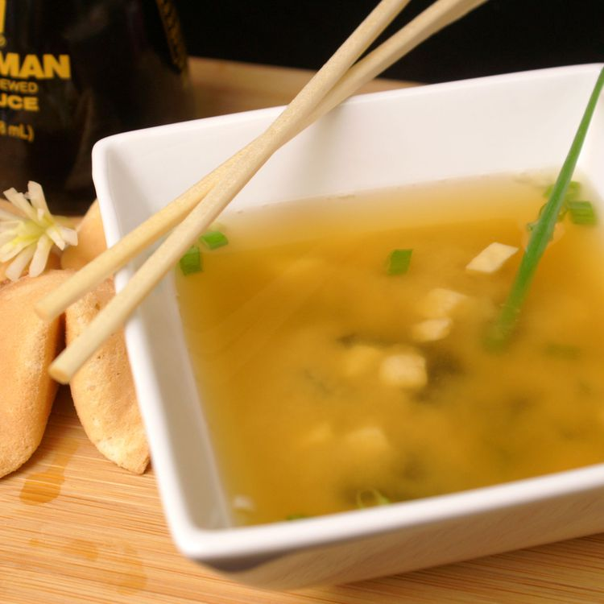

Miso Soup

Description
Miso soup is a traditional Japanese soup that starts with a dashi stock and is flavored with miso paste. This is a Jamie favorite.
Ingredients
- Water
- Dashi granules
- Miso paste
- Green Onions
Steps
- Bring the water and dashi granules to a boil.
- Reduce the heat and whisk in miso paste.
- Stir in tofu and green onions.
- Simmer and serve.
Return to Main Page